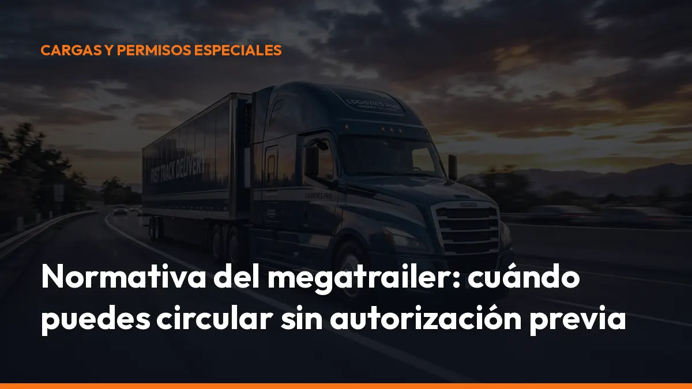

Normativa del megatrailer: cuándo puedes circular sin autorización previa

Desde la modificación del Anexo IX del Reglamento General de Vehículos, los conjuntos euromodulares —incluidos los megacamiones, megatrailers y dúo-trailers— pueden circular sin autorización previa ni comunicación de cada viaje cuando transitan por la red de itinerarios aprobada y cumplen los requisitos técnicos y de circulación establecidos.
La clave está en no confundir libertad de circulación con libertad total de recorrido.
En este artículo encontrarás la normativa del megatrailer, los límites de masa y longitud, las condiciones de la DGT y la relación con las 44 toneladas.
La respuesta rápida: cuándo puedes circular sin autorización
La normativa actual elimina la autorización específica previa para los conjuntos euromodulares.
Puedes circular sin solicitar una ACC —Autorización Complementaria de Circulación— ni comunicar el viaje cuando cumplas estas condiciones:
- Itinerario aprobado: todo el recorrido debe realizarse por la red habilitada para conjuntos euromodulares.
- Configuración legal: el conjunto debe cumplir la definición de conjunto euromodular.
- Requisitos técnicos: tractora, remolques, semirremolques y dispositivos de acoplamiento deben cumplir las exigencias de la DGT.
- Masa y dimensiones: no puedes superar los límites establecidos para esta configuración.
- Condiciones de tráfico: debes respetar las restricciones generales, temporales, meteorológicas y de seguridad.
- Carga correctamente estibada: la mercancía no puede comprometer la estabilidad del conjunto.
La DGT confirma que estos vehículos no necesitan autorización para circular por los itinerarios aprobados.
Antes de salir, comprueba siempre el itinerario, las incidencias y las restricciones al tráfico para camiones.
¿Qué es un conjunto euromodular?
Un conjunto euromodular es una combinación de vehículos formada por más de seis líneas de eje o al menos tres módulos, siempre que cada módulo, considerado individualmente, respete los límites de masa y dimensiones del Anexo IX del Reglamento General de Vehículos.
También puede existir un conjunto de dos módulos cuando cuenta con más de seis líneas de eje y supera los valores máximos establecidos para un vehículo articulado o un tren de carretera convencional.
Entre los módulos posibles se encuentran:
- Tractocamiones y camiones de categoría N2 o N3.
- Remolques y semirremolques de categoría O4.
- Vehículos intermedios preparados y homologados para remolcar.
- Dolly o diábolo, que cuenta como un módulo adicional cuando sostiene un semirremolque.
En términos prácticos, el megatrailer permite combinar varios módulos para transportar más mercancía con menos desplazamientos. Eso mejora el rendimiento de cada viaje y puede reducir el consumo por unidad transportada.
¿Cuánto puede medir un megatrailer?
Los límites máximos generales para un conjunto euromodular son:
Longitud máxima: 32 metros
Masa máxima autorizada: 72 toneladas
Estos son los límites máximos del conjunto. No significan que cualquier combinación pueda circular automáticamente con 32 metros y 72 toneladas.
Debes comprobar también:
- La masa máxima técnicamente admisible de la tractora.
- La capacidad del dispositivo de acoplamiento.
- La masa máxima por eje.
- La homologación de cada módulo.
- Las limitaciones concretas del tramo de carretera.
Un error en cualquiera de estos puntos puede convertir una operación aparentemente legal en una infracción, una inmovilización o un problema durante una inspección.
La red de itinerarios es obligatoria
La nueva normativa del megatrailer sustituye el sistema anterior de autorizaciones individuales por un modelo basado en redes de itinerarios aptos.
Esto significa que no puedes elegir cualquier carretera porque el conjunto cumpla técnicamente. La vía también debe estar evaluada y aprobada para este tipo de vehículos.
La red puede estar determinada por:
- Jefatura Central de Tráfico: para la mayor parte del territorio nacional.
- Servei Català de Trànsit: en Cataluña.
- Gobierno Vasco: en el País Vasco.
- Gobierno de Navarra: en Navarra.
- Ayuntamientos: en las vías donde tengan competencias de vigilancia y control.
Además, el titular de la carretera puede imponer restricciones por motivos:
- Geométricos.
- Estructurales.
- De seguridad vial.
- De capacidad de la infraestructura.
- De obras o incidencias temporales.
Consulta la red de itinerarios y el mapa oficial de la DGT antes de programar cada ruta.
No improvises el último tramo hasta el cargador o el destinatario. Planifícalo con la misma precisión que la ruta principal.
¿Qué ocurre si necesitas salir de la red aprobada?
La autorización previa no funciona como una solución para circular por cualquier carretera.
La regulación actual no contempla autorizar un tramo que no sea apto para conjuntos euromodulares mediante una ACC específica. Si el origen, el destino o una parte de la ruta queda fuera de la red habilitada, tendrás que analizar otra alternativa operativa.
En función del caso, puede ser necesario:
- Dividir el conjunto y operar con vehículos convencionales.
- Adaptar el recorrido a la red disponible.
- Transportar la mercancía con una configuración que respete los límites ordinarios.
- Coordinar una carga y descarga en un punto compatible con la red.
Por eso, el cumplimiento no empieza cuando el camión entra en carretera. Empieza en la planificación de la operación.
Las condiciones de circulación que debes cumplir
La DGT establece condiciones específicas para los conjuntos euromodulares. Estas condiciones se suman a las normas generales de circulación.
Señalización obligatoria
El conjunto debe disponer de:
- Dos señales luminosas V-2 o dispositivos emisores de destellos ámbar.
- Señal V-6 de vehículo largo.
- Distintivo V-23 de señalización del contorno.
- El resto de elementos exigidos por el Reglamento General de Vehículos.
En carreteras convencionales de una sola calzada y doble sentido debes circular con las luces de cruce o las luces de circulación diurna encendidas.
Velocidad y adelantamientos
Debes respetar los límites de velocidad aplicables a camiones, tractocamiones y vehículos articulados.
Además:
- No puedes invadir el sentido contrario para adelantar a vehículos que circulen a más de 45 km/h en vías de una sola calzada.
- No puedes adelantar en rampas con una pendiente igual o superior al 4 % en determinados tramos de doble calzada.
- No puedes adelantar en túneles ni en viaductos de grandes dimensiones, de más de 150 metros, cuando resulte aplicable la restricción.
Meteorología adversa
Debes suspender la circulación y abandonar la carretera convencional cuando exista un riesgo meteorológico grave.
La DGT establece, entre otras situaciones:
- Visibilidad inferior a 150 metros hacia delante o hacia atrás.
- Aviso rojo por viento cuando circulas con carga.
- Aviso naranja por viento cuando circulas vacío.
- Aviso naranja o rojo por lluvia o nieve.
Consulta la información e incidencias de tráfico de la DGT antes de iniciar el viaje.
Estiba y estabilidad
La carga debe quedar asegurada para impedir desplazamientos que comprometan la estabilidad del conjunto.
Esto es especialmente importante en combinaciones largas y pesadas. Una mala distribución puede afectar a:
- La adherencia.
- La frenada.
- El comportamiento en curvas.
- La carga sobre los ejes.
- La seguridad de los demás usuarios.
Revisa la estiba antes de cerrar la operación. Un control de cinco minutos puede evitar una incidencia durante cientos de kilómetros.
La relación entre el megatrailer, el Anexo IX y las 44 toneladas
La Orden PJC/780/2025, de 21 de julio, modificó varios apartados del Anexo IX del Reglamento General de Vehículos.
Puedes consultar el texto oficial en el BOE. La reforma tiene dos efectos que debes diferenciar.
1. Se elimina la autorización específica para los euromodulares
La utilización de los conjuntos euromodulares queda condicionada a:
- Los requisitos técnicos fijados por la DGT.
- Las condiciones específicas de circulación.
- La red de itinerarios aprobada.
- Las restricciones de los titulares de las vías.
Por tanto, ya no necesitas solicitar una autorización individual para cada circulación ordinaria dentro de esa red.
2. Se amplían determinados límites hasta 44 toneladas
La norma también incrementa la masa máxima autorizada para determinadas configuraciones convencionales de transporte de mercancías.
En general, las 44 toneladas se aplican a configuraciones como:
- Vehículos articulados de cinco o más ejes.
- Vehículos de motor de dos o más ejes con semirremolque de tres o más ejes.
- Vehículos de motor de tres ejes con semirremolque de dos ejes.
- Algunas configuraciones de tren de carretera.
Pero un vehículo convencional de 44 toneladas no es automáticamente un megatrailer.
El conjunto euromodular tiene su propio régimen y puede alcanzar hasta 72 toneladas y 32 metros, siempre dentro de la red aprobada y cumpliendo sus requisitos técnicos.
44 toneladas es el límite ampliado de determinadas configuraciones ordinarias. 72 toneladas es el límite máximo de un conjunto euromodular. No los confundas.
Requisitos técnicos: comprueba el conjunto antes de cargar
Para operar con seguridad y cumplir la normativa, revisa como mínimo:
- Suspensión: neumática o equivalente en los ejes motrices.
- Visibilidad: espejos o sistemas de detección del ángulo muerto.
- Carril: sistema de advertencia de abandono o asistencia de mantenimiento.
- Frenado de emergencia: sistema capaz de detectar una situación de peligro y activar la frenada.
- Estabilidad: sistema electrónico de control de estabilidad.
- Tractora: homologación suficiente para la masa máxima del conjunto.
- Acoplamientos: dispositivos homologados y correctamente instalados.
- Potencia: capacidad suficiente para iniciar la marcha en pendientes exigentes.
- Documentación: tarjetas ITV, homologaciones y datos técnicos actualizados.
La documentación debe estar disponible para facilitar cualquier control en carretera.
Transport compliance: convierte la comprobación en un proce-
so sencillo
El cumplimiento normativo no debe depender de la memoria del conductor ni de documentos dispersos en la cabina.
Antes de cada servicio, crea una lista digital con:
- Ruta y tramos autorizados.
- Restricciones temporales.
- Masa y dimensiones del conjunto.
- Revisión de señalización.
- Comprobación de acoplamientos.
- Estado de la carga.
- Incidencias meteorológicas.
- Documentación disponible.
Con Mi Carga puedes centralizar la documentación digital del transporte y facilitar que tú y tus conductores tengáis la información operativa disponible cuando la necesitéis.
Menos papeles. Menos errores. Más control durante la ruta.
Empieza por digitalizar la documentación de tus operaciones desde la suscripción de Mi Carga o solicita información sobre la solución que necesita tu empresa.
Checklist final antes de salir con un megatrailer
Comprueba estos puntos antes de iniciar el viaje:
- El conjunto cumple la definición de euromodular.
- La longitud no supera los 32 metros.
- La masa no supera las 72 toneladas.
- Cada eje respeta su límite de masa.
- La tractora y los módulos están homologados.
- El recorrido está incluido en la red aprobada.
- No existen obras o restricciones temporales.
- La señalización V-2, V-6 y V-23 está instalada.
- La carga está correctamente estibada.
- La previsión meteorológica permite circular.
- La documentación está disponible en la cabina.
Empieza a trabajar con más control
La normativa del megatrailer es más sencilla en un punto importante: ya no necesitas una autorización previa para cada viaje dentro de la red aprobada.
Pero la responsabilidad de comprobar el vehículo, el itinerario, la masa, las dimensiones y las condiciones de circulación sigue siendo tuya.
Revisa la ruta. Comprueba el conjunto. Digitaliza la documentación. Y sal a carretera con toda la información preparada.
Solicita información a Mi Carga y organiza tu documentación de transporte sin complicaciones. ¿Hablamos?
Genera tus 10 primeros documentos gratis con Mi Carga
DeCA, carta de porte y ADR, en PDF, con QR y archivo automático en la nube.
Empezar con 10 documentos gratisArtículo informativo. Consulta siempre el caso concreto de tu operación. ¿Dudas? Escríbenos.